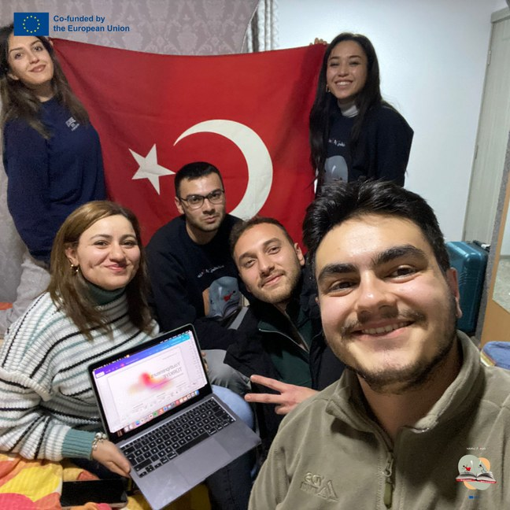
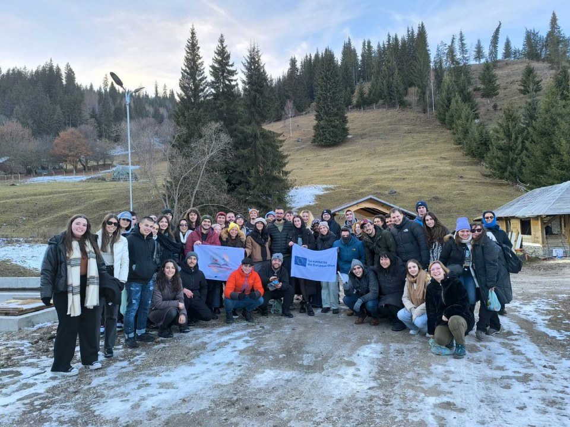
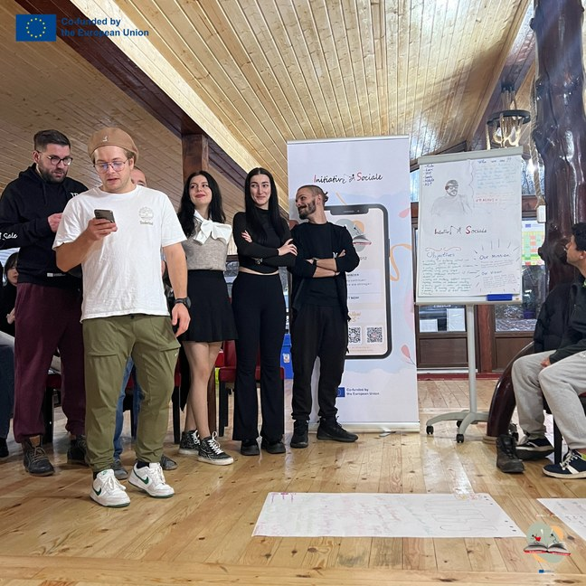

NextGEN · aprofundarea competențelor prin exerciții practice și lucru internațional
YouthPreneurs
Tineri antreprenori
Gândește ca un antreprenor: de la idee la pitch, tinerii au construit, testat și prezentat proiecte în echipe internaționale.



NOI 2024NextGEN
Descriere
În al doilea an, prin NextGEN, activitatea Tineri antreprenori a aprofundat competențele prin exerciții practice, lucru în echipe internaționale, simulări, prezentări și reflecție.
Participanții au dezvoltat comunicarea, lucrul în echipă, gândirea critică, reflecția, încrederea în sine, inițiativa, adaptabilitatea, colaborarea interculturală și capacitatea de a-și planifica mai conștient viitorul educațional și profesional.
- Perioada
- 14–24 noiembrie 2024
- Loc
- Argestru, Vatra Dornei, România
- Tematică
- Inițiativă, competențe practice, colaborare
- Cadru
- Acreditarea Erasmus+ AIS
- Etapă
- Anul 2
- Program
- NextGEN
- Proiect Erasmus+
- 2024-1-RO01-KA151-YOU-000218341
NOI 2024Din fișa proiectului
Turning Entrepreneurial Ideas into Opportunities
persoane
țări
tineri participanți
tineri cu oportunități reduse
În perioada 14–24 noiembrie 2024, Asociația Inițiative Sociale (AIS) a organizat în Argestru, Vatra Dornei, România, schimbul internațional de tineri „NextGEN: YouthPreneurs” (A3), a treia mobilitate implementată în cadrul acreditării Erasmus+ în domeniul tineretului (2022-1-RO01-KA150-YOU-000110034), prin proiectul 2024-1-RO01-KA151-YOU-000218341.
Mobilitatea a reunit 55 de persoane din 8 țări (Bulgaria, Cehia, Italia, Polonia, Portugalia, România, Spania și Turcia), dintre care 45 de tineri cu vârste între 18 și 30 de ani, 8 lideri de grup și 2 facilitatori. Incluziunea a reprezentat o componentă importantă a proiectului, prin participarea a 14 tineri cu oportunități reduse (31,1% din totalul tinerilor participanți), care au beneficiat de acces la oportunități internaționale de învățare, dezvoltare antreprenorială și cooperare interculturală.
Scopul principal al mobilității a fost dezvoltarea spiritului antreprenorial și îmbunătățirea competențelor necesare transformării ideilor inovatoare în inițiative economice viabile, promovând antreprenoriatul ca alternativă pentru dezvoltarea profesională și combaterea șomajului în rândul tinerilor.
Proiectul a urmărit stimularea creativității, inițiativei și gândirii antreprenoriale, dezvoltarea competențelor de planificare și management al afacerilor, îmbunătățirea abilităților de comunicare și cooperare și consolidarea solidarității, toleranței și dialogului intercultural.
Pe parcursul celor 9 zile de activități educaționale, participanții au fost implicați într-un program intensiv de educație non-formală, bazat pe învățare experiențială, workshopuri, brainstorming, simulări antreprenoriale, jocuri de rol, dezbateri, prezentări, lucru în echipe multiculturale, reflecții și evaluări participative.
Activitățile au inclus sesiuni de team-building și incluziune, prezentări privind antreprenoriatul tinerilor în cele opt țări (Youth Business in My Country), provocări antreprenoriale (The Entrepreneurial Challenge), exerciții de generare a ideilor și workshopuri practice dedicate dezvoltării firmelor de exercițiu (YouthPreneurs in Action).
Un element central al procesului de învățare a fost simularea dezvoltării unei afaceri, în cadrul căreia participanții au parcurs etapele transformării unei idei într-un concept antreprenorial: identificarea oportunităților, analiza pieței, stabilirea grupului-țintă, branding, planificare financiară, marketing și promovare.
Programul a inclus și vizite de studiu și întâlniri cu antreprenori locali din zona Vatra Dornei, oferindu-le tinerilor oportunitatea de a descoperi modele reale de afaceri, provocările mediului antreprenorial și importanța valorificării resurselor locale.
Activitățile interculturale, prezentările organizațiilor partenere și sesiunile dedicate Erasmus+ și Youthpass au completat procesul de învățare, contribuind la dezvoltarea competențelor sociale și interculturale.
A3 a generat rezultate educaționale și materiale concrete, dezvoltate prin implicarea directă a participanților:
- 8 studii de caz privind antreprenoriatul tinerilor în țările participante;
- 7 firme de exercițiu, dezvoltate de echipe multiculturale;
- 7 planuri de afaceri, însoțite de analize de piață, strategii de marketing, planuri financiare și prezentări de tip business pitch;
- 7 videoclipuri promoționale, realizate pentru promovarea firmelor simulate;
- 1 broșură educațională dedicată mobilității;
- materiale foto-video, articole, interviuri și testimoniale ale participanților, utilizate pentru promovarea rezultatelor;
- 8 rapoarte naționale de diseminare și valorificare a rezultatelor, realizate de organizațiile participante.
Prin aceste activități, cei 45 de tineri au dobândit cunoștințe practice privind inițierea și gestionarea unei afaceri, identificarea oportunităților antreprenoriale, dezvoltarea modelelor de business, planificarea resurselor și promovarea produselor sau serviciilor.
Totodată, participanții și-au dezvoltat competențele de comunicare, leadership, negociere, creativitate, gândire critică, rezolvare a problemelor, lucru în echipă, adaptabilitate și utilizare a instrumentelor digitale.
Activitățile interculturale au contribuit la îmbunătățirea comunicării în limba engleză, creșterea încrederii în sine și dezvoltarea capacității de cooperare cu persoane din medii culturale diferite.
Procesul de învățare a fost monitorizat prin reflecții zilnice și evaluări, iar cei 45 de tineri au beneficiat de recunoașterea competențelor dobândite prin certificatul Youthpass.
Mobilitatea a fost coordonată de AIS, în colaborare cu cele 7 organizații internaționale partenere, printr-un sistem structurat de planificare, implementare, monitorizare și evaluare.
Etapa de pregătire a inclus selecția și pregătirea participanților, încheierea acordurilor de parteneriat, elaborarea programului educațional, organizarea transportului și cazării la Pensiunea Siady din Argestru, Vatra Dornei, precum și pregătirea materialelor informative, educaționale și de vizibilitate.
Managementul a fost susținut prin instrumente digitale de comunicare și colaborare, întâlniri de coordonare și monitorizarea permanentă a activităților. Pe durata mobilității, întâlnirile cu liderii de grup, reflecțiile zilnice și evaluările inițială, intermediară și finală au permis identificarea nevoilor participanților și adaptarea procesului educațional.
O atenție specială a fost acordată incluziunii tinerilor cu oportunități reduse, participării active, asigurării unui mediu sigur și promovării practicilor responsabile față de mediu.
Rezultatele evaluării post-mobilitate, bazate pe 53 de chestionare completate, au evidențiat un nivel ridicat de satisfacție și o contribuție pozitivă la dezvoltarea personală, socială și antreprenorială.
Nivelul de satisfacție și dezvoltarea competențelor (scală de la 1 la 4 puncte, unde 4 reprezintă punctajul maxim):
- Satisfacția generală: 3,75 din 4 puncte.
- Contribuția la dezvoltarea personală: 3,58 din 4 puncte.
- Dezvoltarea capacității de lucru în echipe multiculturale: 3,64 din 4 puncte.
- Utilitatea workshopurilor de dezvoltare a planurilor de afaceri: 3,55 din 4 puncte.
- Contribuția vizitei de studiu la înțelegerea antreprenoriatului: 3,38 din 4 puncte.
- Nivelul de încredere privind crearea și promovarea unei afaceri: 3,38 din 4 puncte.
- Sprijinul oferit de organizația gazdă: 3,77 din 4 puncte.
Schimbări pozitive și competențe dobândite (53 de respondenți):
- 98,1% dintre respondenți (52 din 53) au identificat schimbări personale pozitive în urma participării la proiect.
- 90,6% dintre respondenți (48 din 53) au confirmat fără echivoc că materialele educaționale și fișele de lucru au contribuit la dezvoltarea competențelor antreprenoriale.
- 94,3% dintre respondenți (50 din 53) au apreciat că proiectul a încurajat sentimentul de comunitate și colaborarea dintre participanți.
- 96,2% dintre respondenți (51 din 53) și-au exprimat interesul pentru participarea la proiecte Erasmus+ similare în viitor.
Unul dintre cele mai relevante rezultate ale mobilității a fost creșterea motivației participanților de a transforma ideile antreprenoriale în inițiative proprii.
În urma evaluării post-mobilitate, 88,7% dintre respondenți (47 din 53) au declarat explicit că își doresc să deschidă o afacere în viitor.
Acest rezultat evidențiază interesul crescut pentru antreprenoriat și disponibilitatea de a valorifica, în viitor, competențele dobândite.
În mod concret, prin dezvoltarea celor 7 firme de exercițiu, participanții au experimentat etapele de inițiere a unei afaceri, de la identificarea unei oportunități până la elaborarea planului financiar și promovarea conceptului în fața unui public.
Aceste activități au contribuit la dezvoltarea încrederii în propriile idei, a capacității de planificare, a asumării responsabilității și a inițiativei personale.
În ceea ce privește tinerii care au încercat efectiv să deschidă o afacere după mobilitate, evaluările disponibile nu consemnează un număr verificabil de persoane care au inițiat demersuri concrete de lansare a unui business. Indicatorul de 47 de respondenți reflectă intenția antreprenorială declarată, nu numărul de afaceri începute sau înființate.
Feedbackul celor 8 lideri de grup a fost pozitiv: 6 lideri au declarat că sunt „Very satisfied”, iar ceilalți 2 „Satisfied” cu experiența mobilității.
Toți cei opt lideri au confirmat dezvoltarea competențelor antreprenoriale ale participanților, iar șapte au identificat progrese în ceea ce privește competențele personale, sociale și capacitatea de învățare.
De asemenea, șase lideri au evidențiat îmbunătățirea competențelor digitale și multilingvistice, iar șase au apreciat că participanții și-au clarificat aspirațiile și obiectivele profesionale.
Evaluarea organizațiilor partenere a confirmat calitatea managementului și cooperării, fiind înregistrate următoarele rezultate:
- 5 din 5 puncte pentru comunicarea cu organizațiile partenere;
- 4,86 din 5 puncte pentru gradul de îndeplinire a obiectivelor;
- 5 din 5 puncte pentru nivelul general de satisfacție al participanților, apreciat de parteneri.
Mobilitatea a contribuit și la dezvoltarea capacității organizaționale AIS, consolidarea relațiilor internaționale și schimbul de metode și bune practici între organizațiile participante.
Rezultatele A3 au fost promovate prin intermediul blogului NextGEN, al rețelelor sociale, broșurii educaționale, materialelor video și activităților de multiplicare organizate de participanți și organizațiile partenere.
Pentru această mobilitate au fost realizate 8 rapoarte naționale de diseminare, documentând prezentări, workshopuri, întâlniri și activități online desfășurate în țările participante.
Printre activitățile documentate se numără:
- România: o sesiune de prezentare la Centrul de Tineret AHA din București, cu 43 de participanți, și un eveniment la Liceul „George Emil Palade” din Constanța, cu 30 de participanți.
- Bulgaria: o prezentare a rezultatelor într-o instituție de învățământ, cu 40 de participanți.
- Portugalia: trei activități de informare și multiplicare în Lisabona, Coimbra și Madeira, cu 12 participări raportate.
- Cehia: o prezentare educațională pentru 5 persoane, completată de promovarea online prin organizația parteneră.
- Turcia: două evenimente de diseminare în Ankara, cu 15 participări raportate.
- Spania: trei sesiuni online de prezentare a experiențelor și rezultatelor educaționale, cu 13 participări raportate.
- Italia: o sesiune online de diseminare, cu 10 participanți, completată de materiale de promovare digitală.
Aceste activități reprezintă cel puțin 168 de participări raportate în cadrul acțiunilor de informare și diseminare identificate pentru A3, la care s-au adăugat campaniile online și materialele distribuite prin rețelele organizațiilor și ale participanților.
Diseminarea online a inclus articole, testimoniale, fotografii, videoclipuri și postări pe Facebook, Instagram, LinkedIn și TikTok.
Un exemplu relevant de impact digital a fost înregistrat în Italia, unde o postare realizată în colaborare cu platformele Orientiamoci și Geopolitica.info a ajuns la 5.320 de conturi Instagram, generând aproximativ 200 de aprecieri și 15 solicitări de informații despre Erasmus+.
Activitățile de diseminare au contribuit la creșterea vizibilității proiectului, promovarea oportunităților Erasmus+ și valorificarea metodelor de educație non-formală în comunitățile organizațiilor partenere.
„NextGEN: YouthPreneurs” a reprezentat o etapă importantă în implementarea acreditării Erasmus+ a Asociației Inițiative Sociale, contribuind la atingerea obiectivelor strategice privind dezvoltarea competențelor antreprenoriale, incluziunea socială, cooperarea interculturală și consolidarea parteneriatelor internaționale.
Prin implicarea celor 55 de persoane din 8 țări, dezvoltarea celor 7 firme de exercițiu, elaborarea planurilor de afaceri și realizarea materialelor promoționale, mobilitatea a demonstrat valoarea educației non-formale în stimularea inițiativei, creativității și gândirii antreprenoriale.
Faptul că 88,7% dintre respondenți și-au exprimat dorința de a deschide o afacere în viitor, alături de rezultatele pozitive ale evaluării și activităților de diseminare, evidențiază contribuția proiectului la dezvoltarea motivației antreprenoriale și a încrederii tinerilor în propriile capacități.
Experiența și competențele dezvoltate prin A3 reprezintă o bază pentru valorificarea ideilor antreprenoriale în inițiative viitoare și pentru implicarea activă a tinerilor în dezvoltarea comunităților lor.
The story continues! Together we are stronger!